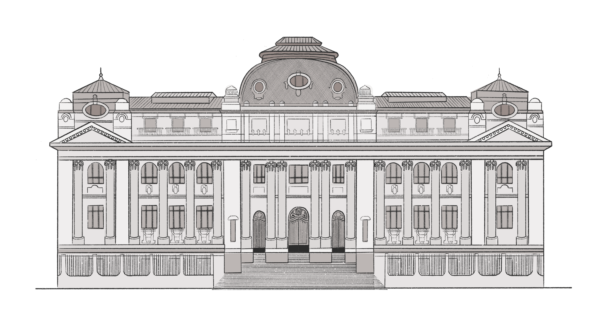

Una biblioteca para Chile
La Biblioteca Nacional nace debido a la necesidad de tener un espacio físico en donde resguardar y difundir el patrimonio intelectual, y desde su fundación comenzó a recibir donaciones de libros por parte de los vecinos de Santiago y otras ciudades, para poder recogerlos y catalogarlos, y así dejarlos disponibles a la consulta pública.
Hoy, su misión es un poco más amplia, ya que se concentra en rescatar, preservar y difundir nuestro patrimonio bibliográfico, y además ha dado un nuevo paso incorporando una biblioteca digital para aumentar la accesibilidad. Así, en el 2003 se inauguró el portal de contenidos culturales y biblioteca virtual Memoria Chilena , que permite dar acceso a los diversos materiales que preserva Biblioteca Nacional de Chile.